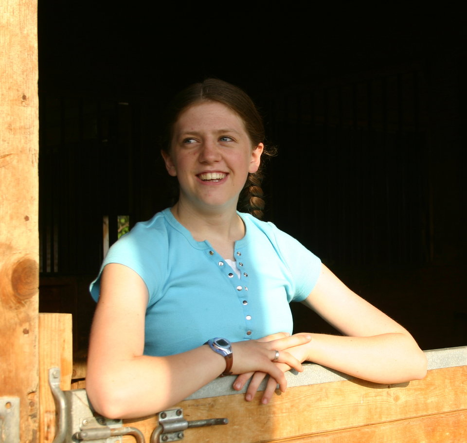

Hello, I’m Sarah!
My home is Wenatchee, WA
My home is Wenatchee, WA
I spent the first 13 years of my life in Texas and moved to Washington because of my dad's job. In my late teens, my possible career choices changed every two weeks and I never pursued any of them. Now I am 24 and finally, feel as though I have found a career home in front end web design.
I want to become proficient in and have a deep understanding of:
I will use my skills to help others create engaging websights.
In my spare time, I like to read, watch tv shows and movies, and spend time with my family.